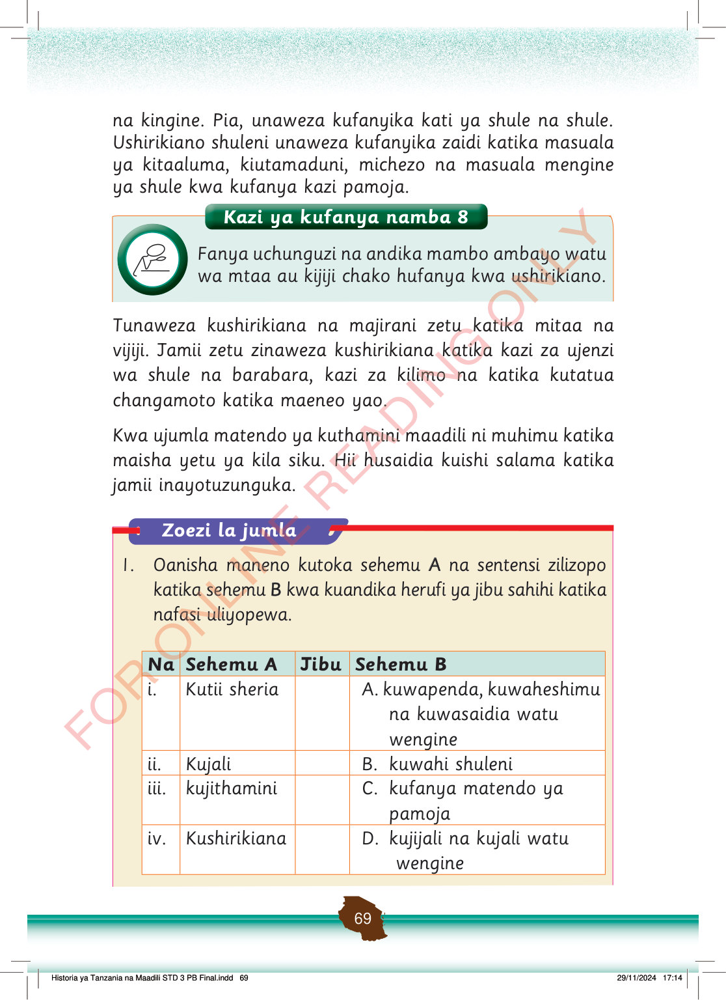

na kingine.
Pia, unaweza kufanyika kati ya shule na shule.
Ushirikiano shuleni unaweza kufanyika zaidi katika masuala ya kitaaluma, kiutamaduni, michezo na masuala mengine ya shule kwa kufanya kazi pamoja.
Tunaweza kushirikiana na majirani zetu katika mitaa na vijiji.
Jamii zetu zinaweza kushirikiana katika kazi za ujenzi wa shule na barabara, kazi za kilimo na katika kutatua changamoto katika maeneo yao.
Kwa ujumla matendo ya kuthamini maadili ni muhimu katika maisha yetu ya kila siku.
Hii husaidia kuishi salama katika jamii inayotuzunguka.
Kazi ya kufanya namba 8
Fanya uchunguzi na andika mambo ambayo watu wa mtaa au kijiji chako hufanya kwa ushirikiano.
Kazi ya kufanya namba 8: Fanya uchunguzi na andika mambo ambayo watu wa mtaa au kijiji chako hufanya kwa ushirikiano.
Zoezi la jumla
1.
Oanisha maneno kutoka sehemu A na sentensi zilizopo katika sehemu B kwa kuandika herufi ya jibu sahihi katika nafasi uliyopewa.
Na
Sehemu A
Jibu
Sehemu B
i.
Kutii sheria
A. kuwapenda, kuwaheshimu na kuwasaidia watu wengine
ii.
Kujali
B. kuwahi shuleni
iii.
kujithamini
C. kufanya matendo ya pamoja
iv.
Kushirikiana
D. kujijali na kujali watu wengine
dropzone-2
dropzone-1
dropzone-4
dropzone-3